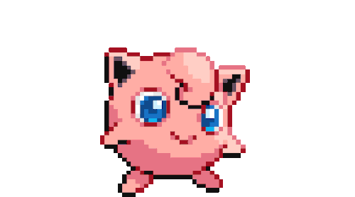
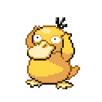
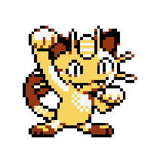
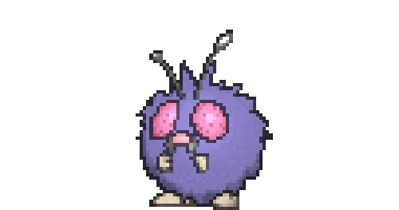
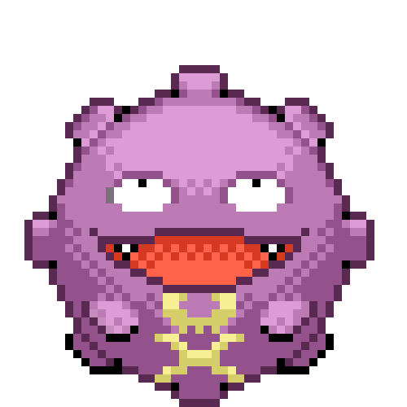
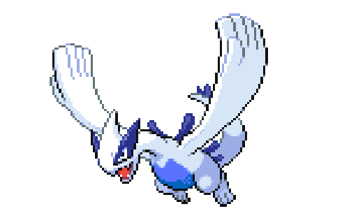

-
Pikachu #001

- Elétrico
Quando está com raiva, descarrega imediatamente a energia armazenada nas bolsas de suas bochechas.
-
Charmander #002

- Fogo
Tem preferência por coisas quentes. Quando chove, o vapor jorra da ponta de sua cauda.
-
Bulbasaur #003

- Grama
- Veneno
Há uma semente de planta em suas costas desde o dia que este Pokémon nasce. A semente cresce lentamente.
-
Squirtle #004

- Água
Quando se sente ameaçado, ele puxa seus membros para dentro de sua carapaça e borrifa água de sua boca.
-
Jigglypuff #005
- Normal
- Fada
Quando seus olhos enormes vacilam, ele canta uma melodia misteriosamente reconfortante que embala seus inimigos para dormir.
-
Psyduck #006
- Água
É constantemente assolado por uma dor de cabeça. Quando a dor de cabeça fica intensa, ela começa a usar poderes misteriosos.
-
Meowth #007
- Normal
Tudo o que faz é dormir durante o dia. À noite, patrulha seu território com os olhos brilhando.
-
Snorlax #008

- Normal
Não fica satisfeito a menos que coma mais de 880 libras de comida todos os dias. Quando termina de comer, vai imediatamente dormir.
-
Mew #009

- Psíquico
Quando visto através de um microscópio, o cabelo curto, fino e delicado deste Pokémon pode ser visto.
-
Clefairy #010

- Fada
Seu comportamento adorável e choro o tornam altamente popular. No entanto, este Pokémon fofo raramente é encontrado.
-
Venonat #011
- Inseto
- Veneno
Veneno escorre de todo o seu corpo. Ele pega pequenos Pokémon insetos à noite que são atraídos pela luz.
-
Koffing #012
- Veneno
Seu corpo está cheio de gás venenoso. Ele flutua em depósitos de lixo, procurando a fumaça do lixo cru e apodrecido.
-
Ekans #013

- Veneno
Quanto mais velho fica, mais cresce. À noite, envolve seu longo corpo nos galhos das árvores para descansar.
-
Lugia #014
- Psíquico
- Vôo
As asas de Lugia carregam um poder devastador - um leve bater de suas asas pode destruir casas comuns. Como resultado, este Pokémon escolhe viver escondido nas profundezas do mar.